24.10.2022
Nachdem ich schon seit längerer Zeit bei der Verwendung von Material das nicht von mir ist jeweils eine Lizenzangabe vorgenommen habe, dachte ich mir heute, dass ich zu dem Thema zum besseren Verständnis auch etwas auf meiner Webseite anbringen sollte. Deshalb habe ich heute auf meiner Startseite einen Link zu der Lizenz CC BY-NC-SA 4.0 eingetragen. Um Beachtung wird freundlichst gebeten. Auf Anfrage sind für mich auch abweichende Regelungen denkbar.
31.10.2022
Inzwischen konnte ich im E-Mail Austausch mit der "Kgl. Bibliotek - Den sorte Diamant" - mit Jette Bahnson, Bibliotekar - die offenen Fragen zu den "Kemitypier" klären. Es kann nur die eine Schachtel, die mir bei meinem Besuch vorgelegt wurde, vor Ort in Augenschein genommen werden - siehe unten. Die Druckformen sind für die Öffentlichkeit nicht zugänglich und demzufolge auch nicht in deren Bibliotheksbestand eingepflegt worden. Sie werden in dem Schrank verwahrt, der seinerzeit für die Sammlung von Prof. Ludv. F. A. Wimmer gebaut wurde. Die "Kemitypier" sind einzeln verpackt und werden in den unteren linken und den unteren rechten Fächern des Schranks gelagert. Frau Bahnson hat mir freundlicherweise einige Fotos von einigen Stücken gemacht und hat mir auch die Erlaubnis zur Veröffentlichung erteilt. Zu der Christusdarstellung auf dem Runenstein von Harald Blauzahn - S. 21 aus De danske runemindesmærker, Band I.2 von Prof. Ludv. F. A. Wimmer - ist einmal die Verpackung und einmal die Druckform zu sehen. Genau wie bei dem Runenstein von Flemløse 1, hier in der Wiedergabe zu Ole Worms Werk Danicorum Monumentorum Libri Sex, Hafniae, 1643, S. 247 - Wiedergabe auf der S. 355 aus De danske runemindesmærker, Band II von Prof. Ludv. F. A. Wimmer.
Mehr ist ihr aber leider nicht möglich. Mange tak für die tolle Unterstützung!

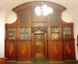

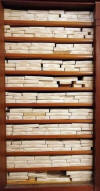

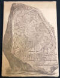

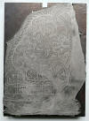

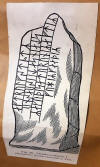

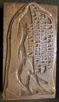
23./24.10.2022
In der Sammlung von Prof. Ludv. F. A. Wimmer in der Königlichen Bibliotek in Kopenhagen - Den sorte Diamant - befinden sich auch die "Kemitypier" (Kemitypi = Reproduktionsverfahren, bei dem eine geätzte Kupferplatte durch Schmelzen von Zink und Ätzen in einen Buchdruck umgewandelt wird) zu den Runensteinen, die in seinem großen Werk "De danske Runemindesmærker undersøgte og tolkede af Ludv. F. A. Wimmer, 1893 - 1908" Verwendung fanden. Dabei muss es sich entweder um die geätzten Kupferplatten oder die darüber erzeugten Bilder gehandelt haben. Das ist aus der Verlinkung "Kemitypier m.m. til Afbildningerne af Runemindesmærkerne" nicht erkennbar. Ich hatte dieses Teil online vorbestellt. Es wurde mir nur eine große Schachtel vorgelegt. Zu dem Teil steht auch in der Verlinkung nur "1 æske" (= 1 Schachtel). Ausweislich der Auflistung in Collectio runologica Wimmerian: Fortegnelse over Ludv. F. A. Wimmers runologiske o. a. Samlinger i Det kgl. Bibliotek ist dies allerdings nur eine Beilage zu der speziellen Sammlung von Kemitypier (S. 75-77 - S. 77 ganz unten - Vedlagt: 2.). Die in der Schachtel befindlichen Gegenstände - wohl die Kupferplatten in gesonderten kleinen Schachteln - sind die, die für seine beiden Bücher "Die Runenschrift" und für "Døbefonten i Aakirkeby Kirke" genutzt wurden. Dazu Abdrücke von altenglischen Münzen und Staniolabdrücke der Runeninschrift des gotländischen Kylfver Runensteins, die ein vollständiges "futhark" aufweist und Schwedens älteste Runeninschrift ist. Außerdem ist in der Schachtel noch ein Papierabdruck der Inschrift des Runenkamms Lund - Kamm 1 - DR 303 - Inschrift: Arngunn gab mir den Kamm).
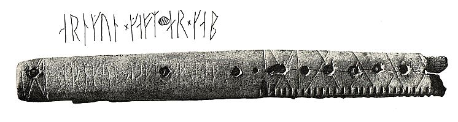
Quelle: Scan aus Jacobsen/Moltke, Danmarks Runeindskrifter, Atlas, 1941, S. 283, Nr. 709
Den Inhalt habe ich deshalb nicht gesondert in Augenschein genommen, sondern am 26.09.2022 nur diese Fotos gemacht.

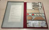

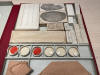

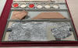

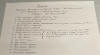

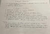
Außerdem hatte ich aus dessen Sammlung auch das mal einsehen wollen: "Papiraftryk af de danske Runemindesmærker, tagne af Ludv. Wimmer personlig paa hans runologiske Undersøgelsesrejser, samt Aftryk af forskellige andre Mindesmærker". Mir wurden zwei große Pappschachteln vorgelegt und nachdem ich den Inhalt sah, habe ich aufgrund der Menge und meinem Zeitdruck nur diese Fotos gemacht. Es reichte mir auch, das einfach mal kurz im Original gesehen zu haben.

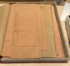

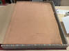

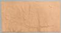
Der einzelne Abdruck hier - oberstes Blatt aus der ersten abgebildeten Schachtel - wurde ausweislich der Bleistiftanmerkung am 27.01.1918 vom Runenstein Jelling 1 (Gorm der Alte) angefertigt. Dann sollte der Abdruck (1.2) folgendes zeigen: ":karþi : kub" (siehe u.a. Liste). Das Deckblatt der zweiten Kiste zeigt einen Abschnitt der Inschrift des Runensteins Aarhus 1 und wurde an dem Runensteinbruchstück rechts außen von unten angelegt.
Eine Liste aller Abdrücke findet sich über die Homepage der Königlichen Bibliothek in Kopenhagen. Diese resultiert aus einem Scan aus "Collectio runologica Wimmerian: Fortegnelse over Ludv. F. A. Wimmewrs runologiske o. a. Samlinger i Det kgl. Bibliotek" (S. 47-61). Wenn ich das jetzt über die Homepage der Bibliothek nachlese, beinhaltet dieser Teil der Sammlung insgesamt 21 Schachteln mit den Maßen 69 x 55 x 8 cm. Ich hatte wohl aber nur die ersten beiden Schachteln angefordert!
----------
Zu der Webseite Jütland - 14 - Ådum habe ich heute - 23.10.2022 - außerdem noch die Erkenntnisse / Fotos aus meinem Studientripp nach Kopenhagen eingefügt. Auch hier galt es daraus etliches aufzubereiten. Aus der Hinterlassenschaft von P. G. Thorsen (*07.08.1811 - 06.05.1883, Bibliothekar, Runenforscher und Historiker), die sich ebenfalls in der Königlichen Bibliotek unter NKS 3296 kvart (in mehreren einzelnen Pappschachteln - hier Nr. 6) befindet, findet sich dieser Papierabdruck von einem Teil der Runeninschrift.

----------
Heute habe ich auch einmal die Größe meiner Webseite abgeklärt - 6347 Dateien liegen auf dem Server bei 1&1 mit einem Datenumfang von 726,398352 MB.
22.10.2022
Zu der Webseite Jütland - 11 - Klebæk Høje - habe ich heute die Erkenntnisse / Fotos aus meinem Studientripp nach Kopenhagen eingefügt. Dies sind vor allem die Fotografien die ich von der Sammlung von Prof. Ludv. F. A. Wimmer anfertigen konnte und zumeist Zeichnungen von Magnus Petersen (*04.09.1827 - 01.02.1917, Archäologischer Zeichner und Restaurator) sind - z.B. dieses hübsche Landschaftsbild mit Datum vom 20.07.1878.

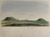
Ich habe heute auch noch die Infos zu Jütland - 12 - Horne aufbereiten können. Auch zu diesem Runenstein gab es in der Königlichen Bibliothek, im Antikvarisk-Topografisk Arkiv und in der Universität/Den Arnamagnæanske Samling in Kopenhagen sehr viel Material, zumal seine Existenz ja auch schon seit 1627 bekannt ist. Er findet sich in der Handschrift "A.M. 367 fol.", Blatt 17r von Jon(as) Skonvig (*1600 - 1664, Pfarrer und der Runenzeichner für Ole Worm), in den beiden Werken von Johannes Meier (*um 1606 - ca. 1660 - Lehrer und Verfasser) - GKS 2371 kvart - Liber monumentorum Danicorum, qvi monumenta Danica Olai Wormii partim emendat partim locupletat (1654) und NKS 799 kvart - Joh. Mejeri Monumenta Runica in Dania / im Atlas Danicus - 1677 - Band VI - S. 764-65 von Peder Hansen Resen / in Søren Abildgaards (*18.02.1718 - 02.07.1791, Zeichner, Kupferstecher und Geologe) - Notesbog VIII, S. 15, aus dem Jahr 1772-74 / / und natürlich in den Aufzeichnungen von Prof. Ludv. F. A. Wimmer - daraus eine tolle Zeichnung (siehe unten) von Magnus Petersen (*04.09.1827 - 01.02.1917, Archäologischer Zeichner und Restaurator) und ein Arbeitsblatt mit Maßangaben usw. Aber auch aus dem Nachlass von P. G. Thorsen (*07.08.1811 - 06.05.1883, Bibliothekar, Runenforscher und Historiker), der sich ebenfalls in der Königlichen Bibliotek unter NKS 3296 kvart (in mehreren einzelnen Pappschachteln - hier Nr. 5) befindet, ist zu Horne etwas dabei. Sogar eine Visitenkarte von Magnus Petersen wird dort verwahrt (Auf deren Rückseite befindet eine einfache Skizze zu den Jelling Grabhügeln).


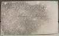
18.10.2022
Zu der Webseite Jütland - 10 - Bække - habe ich heute Informationen aus meinem Studientripp nach Kopenhagen einarbeiten können. So z.B. eine Zeichnung und Textnotiz aus den handschriftlichen Aufzeichnungen von Martin Friedrich Arendt (* 22. Februar 1773 in Altona; April 1823 in der Nähe von Venedig/Italien, deutscher Botaniker und Altertumsforscher). Außerdem habe ich durch die weitere Auswertung der Quellenangaben in "Danmarks Runeindskrifter" von Jacobsen/Moltke, und darüber recherchierte Digitalisate Beiträge von mehreren Wissenschaftler eingearbeitet. Die Zeichnung von Magnus Petersen (*04.09.1827 - 01.02.1917, Archäologischer Zeichner und Restaurator) mit Datum vom 19.07.1878 versehen dürfte hier das Highlight sein.

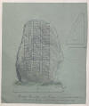
17.10.2022
Zu der Webseite Jütland - 9 - Læborg habe ich Informationen aus meinem Studientripp nach Kopenhagen einarbeiten können. So z.B. eine Zeichnung und Textnotiz aus den handschriftlichen Aufzeichnungen von Martin Friedrich Arendt (* 22. Februar 1773 in Altona; April 1823 in der Nähe von Venedig/Italien, deutscher Botaniker und Altertumsforscher) / von Søren Abildgaard (*18.02.1718 - 02.07.1791, Zeichner, Kupferstecher und Geologe) - Notesbog X aus dem Jahr 1774 / von Peder Hansen Resen - Atlas Danicus - 1677 - aus Band VI / / Aufzeichnungen von Prof. Ludv. F. A. Wimmer - daraus die tollen Zeichnungen von Magnus Petersen (*04.09.1827 - 01.02.1917, Archäologischer Zeichner und Restaurator) und Arbeitsblätter mit Maßangaben usw.
Aber allen voran von Johannes Meier (*um 1606 - ca. 1660 - Lehrer und Verfasser) seine beiden frühen Werke GKS 2371 kvart - Liber monumentorum Danicorum, qvi monumenta Danica Olai Wormii partim emendat partim locupletat (1654) und NKS 799 kvart - Joh. Mejeri Monumenta Runica in Dania.
16.10.2022
Zu der Webseite Jütland - 6 - Hovslund habe ich nun weitere Informationen aus meinem Studientripp nach Kopenhagen einarbeiten können. Zum einen Notizen vom Mai des Jahres 1668, die Corfitz Braem (*07.07.1639 - 09.08.1683, Bürgermeister von Helsingör) in sein "Reisebog paa hans Reiser i Holland, de spanske Nederlande, Frankrige, Tydskland, Sverrig, Norge, imellem 1659 og 1673" aufnahm. Außerdem konnte ich Ergänzungen einpflegen von Søren Abildgaard (*18.02.1718 - 02.07.1791, Zeichner, Kupferstecher und Geologe) - Notesbog XI aus den Jahren 1775-76 / Peder Hansen Resen - Atlas Danicus - 1677 - aus Band VI / / Aufzeichnungen von Prof. Ludv. F. A. Wimmer - daraus Maßangaben und eine Zeichnung.
Dazu kommen über eigene Recherchen im Internet gefundene Digitalisate durch die weitere Auswertung der Quellenangaben in "Danmarks Runeindskrifter" von Jacobsen/Moltke, so Mag. Johan Arndt Dyssel - Forsøg til en Indenlandsreise 1763 - 1774 gedruckt - der sich darin ausführlich zu dem Runenstein auslässt / Peder Pedersen Syv - Handschriftensammlung Rostgaard 21 Notiz zu dem Runenstein - dazu Erläuterungen von Prof. Ludv. F. A. Wimmer.
13.10.2022
Bei meinem letzten Besuch in Hobro am Dienstag, 14.06.2022, musste ich festellen, dass das kleine Museum dauerhaft geschlossen ist.
In Fyrkat hat man mir auf Nachfrage erklärt, dass aktuell alle Funde im Nationalmuseum in Kopenhagen seien. Ob diese einmal in Fyrkat ausgestellt werden, wusste man nicht.
Auf E-Mail Nachfrage bekam ich am 12.10.2022 von Lykke Olsen, Museumsinspektør, Nordjyske Museer, die Auskunft, dass angedacht ist die Ausgrabungsfunde in Zukunft im Zugangsbereich der Ringburg, im "Fyrkat Møllegaard" anzusiedeln. Dies wird aber nicht vor 2027 sein, da die Funde bis dahin an das Nationalmuseum in Kopenhagen ausgeliehen sind.
09.10.2022
Zu dem Runenstein von - 17 - Ydby/Flarup - habe ich heute eine Ergänzung vorgenommen. In der Königlichen Bibliotek zu Kopenhagen - Den sorte Diamant - hat sich unter "Thott 1445 kvart" von Albert Thura (*1700 - 1740, dänischer lutherischer Theologe und Literaturwissenschaftler) die Handschrift "Aaalborg Stifts Beskrivelse ved Albert Thura", erschienen um das Jahr 1735, bewahrt. Dieses Werk habe ich anlässlich meines Studienaufenthaltes in Kopenhagen am Mittwoch, 28.09.2022, in Händen gehalten. Dort findet sich auf der S.558 ein Eintrag zu diesem Runenstein.
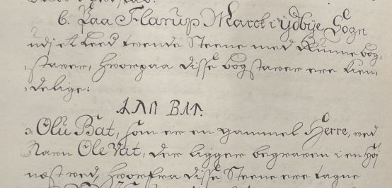
09.10.2022
Zwischen Montag, 26.09.2022, und Mittwoch, 28.09.2022, habe ich in der Königliche Bibliothek - Den sorte Diamant - in Kopenhagen - diverse alte Handschriften/Bücher nach Online-Vorbestellung zur Ansicht erhalten. Ich durfte mir Aufzeichnungen machen, sie aber auch uneingeschränkt fotografieren. Einige sehr alte "Schätze" habe ich als Doppelseiten fotografiert und daraus eine pdf-Datei erstellt. Vielleicht hat ja jemand Bedarf an diesen seltenen Ausgaben, die aufgrund ihres Alters keinem Urheberrrecht mehr unterliegen.
-----
Von/über Johannes Meier (*um 1606 - um 1660) wären die drei unten angeführten Werke relevant. Er fing zwischen 1647-50 an zu Runendenkmälern Notizen und Zeichnungen anzufertigen, als er Rektor in Ribe war. Thomas Bartholin schreibt erstmals dazu in seinem Werk "Antiquitates Danicæ" von 1690, S. 124 (Anm. die erste von zwei Seiten 124!): "...Johannes Mejerus, in seiner noch nicht gedruckten Monumenta Runica..."
GKS 3022 kvart -
GKS 2371 kvart - Liber monumentorum Danicorum, qvi monumenta Danica Olai Wormii partim emendat partim locupletat -
NKS 799 kvart - Joh. Mejeri Monumenta Runica in Dania - Papier - 44 Blatt, Blatt 41-44 unbeschrieben, aus dem 18. Jahrhundert, vormals Nr. 70 in der Manuskript Sammlung von Peder Frederik Suhm (*18.10.1728 - 07.09.1798). Es handelt sich um ein Büchlein mit einfachem Pappeinband, der Buchrücken ist aus Leder und verstärkte Ecken aus Leder weist der Buchdeckel auf. Es hat die Maße: H: ca. 20 cm / B: ca. 17 cm / D: ca. 1,5 cm. Zu den einzelnen Zeichnungen im Büchlein wurde ein einfacher Maßstab abgebildet.
Bei beiden Exemplaren weist immer das rechte Blatt der Doppelseite in der oberen Ecke eine mit Bleistift geschriebene Seitenzahl auf. Diese beiden Werke sind Abschriften von früheren Werken, die die Zeit nicht überdauert haben. Vielleicht sind sie in Kopenhagen beim Großbrand von 1728 vernichtet worden, als neben zahlreichen privaten Beständen auch ca. 35.000 Bücher der Kopenhagener Bibliothek ein Raub der Flammen wurden! Die GKS 2371 kvart soll laut Ludv. F. A. Wimmer (*07.02.1839 - 29.04.1920, Philologe und Runenforscher) und seinen Infos von Christian Bruun (*10.12.1831 - 28.02.1906, Königlicher Bibliothekar) von Niels Foss selbst abgeschrieben worden sein. Er hat die Texte laut den Studien von Erik Moltke (*04.04.1901 - 19.10.1984, Runologe, Historiker) offenbar überarbeitet, verkürzt oder geändert und seine eigene Orthografie eingebracht (z.B. alt: haffuer - bei Foss: haver / tyck/tyk / kircke/kirke / oc/og u.a.).
In der NKS 799 kvart hingegen steht auf der Seite 37 links unten "Niels Knudsen Jerne" und seine Handschrift lässt vermuten, dass er die gesamte Abschrift angefertigt hat. Er war offenbar ein professioneller Schreiber und könnte mit dem Niels Knudsen identisch sein, der 1728 "Skriverkarl" auf dem Holmen (Stadtviertel von Kopenhagen) war, also ein Mann der schnell viele Texte schreiben und liefern konnte. Er wurde am 08.11.1737 zum "ekvipageskriver" ernannt. Es scheint dass er sich entgegen Niels Foss sehr eng an das Original gehalten hat.
Offenbar gab es laut dem Katalog über die Büchersammlung von Peter Hansen Resens (*17.06.1625 - 01.06.1688) "Bibliotheca Regiæ Academiæ Hafniensi donata" Hafniæ (Kopenhagen) von 1685 - siehe S. 273 - früher noch ein drittes Werk von Johannes Meier mit dem Titel "Johan. Meieri liber MS. de Monumentis Runicis sive antiqvis Danicics".
Quellen: Erik Moltke - Jon Skonvig og de andre runetegnere. Et bidrag til runologiens historie i Danmark og Norge I-II, 1956-58 Band 2, Kapitel 13, S. 13 ff. / eigene Recherchen
-----
weitere folgen...
07.10.2022
Ein Highlight jagt gerade das nächste - Reiss-Engelhorn-Museen in Mannheim (68159 Mannheim, C 5) - Ausstellung vom 18.09.2022 bis 26.02.2023 - Die Normannen (Verlinkung zu Allgemeinen Infos, Öffnungszeiten, Eintrittspreise usw).
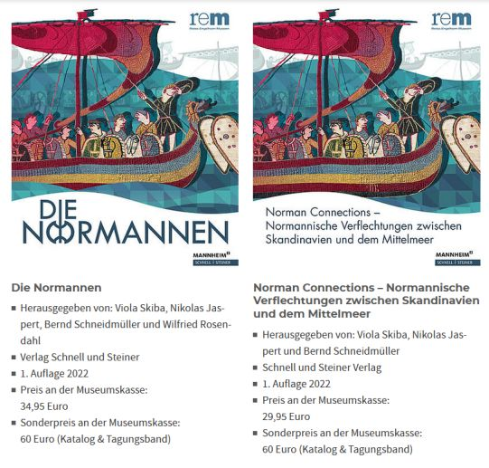
In gleicher fester Buchbindung wie das Verlagsexemplar - günstiger als beim Verlag (45 / 35 - zus. 70 )____________________________________________________________________
Heute - 07.10.2022 - war ich in dieser Ausstellung - insgesamt 02.50 Stunden - und war vom Umfang und der Auswahl der Artefakte angenehm angetan.
Hier eine kleine Auswahl:
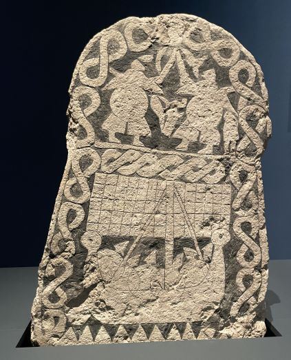
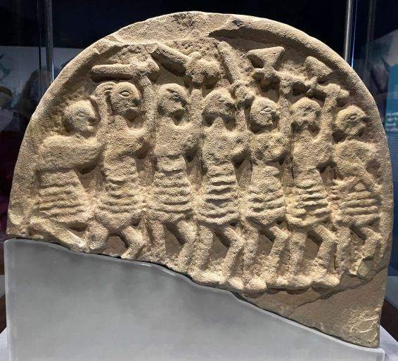
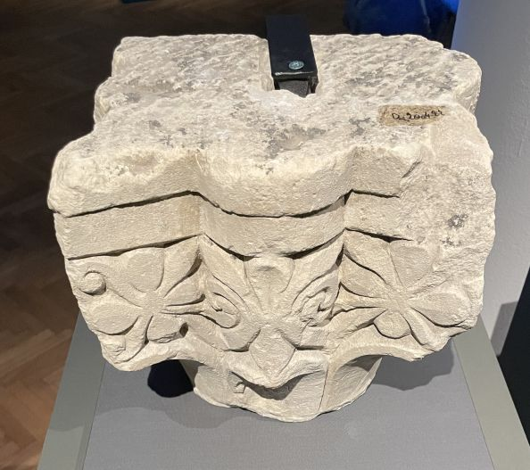
Der Bildstein von Smiss / Gotland - H: 125 cm Sog. Viking Raider Doomsday Stone - Lindisfarne - H: 33 cm Kapitell Abtei von Jumièges mit Brandspuren - Wikingerangriff 24. Mai 841
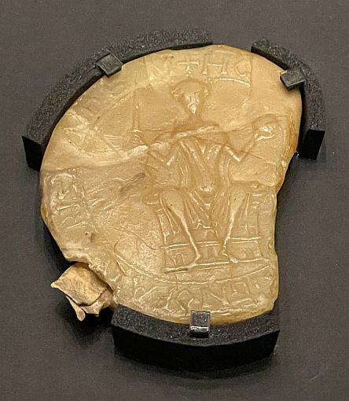
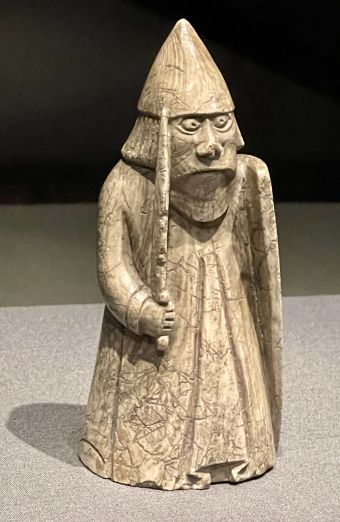
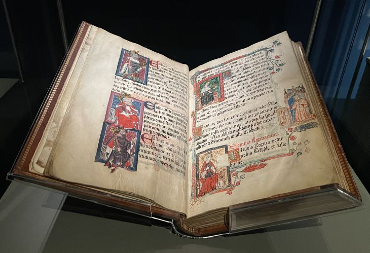
Wachssiegel - Wilhelm der Eroberer - 13.04.1069 Lewis Warder Schachfigur - H: 9,8 cm Liber Benefactoribus des Thomas Walshingham von 1380 - re unten Kaiserin Mathilde (*1102 - 1167)
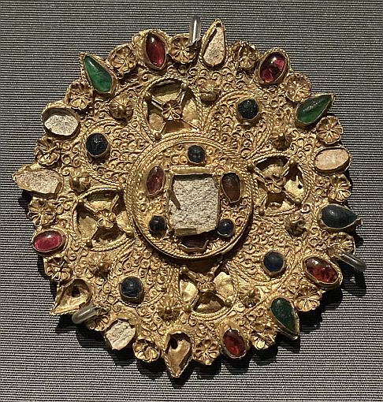
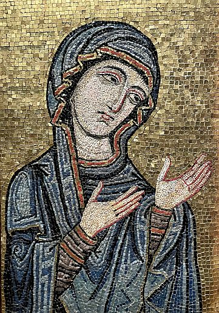
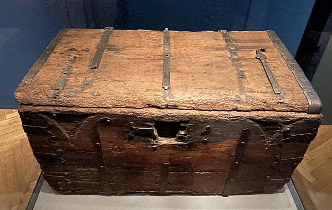
Fibel - Schatz von Monteccasino - D: 6,3 cm Mosaik aus dem Normannedom Palermo Truhe zur Aufbewahrung des Teppichs von Bayeux - 13. Jh. - H: 53 cm, B: 103 cm, T: 60 cm
Allerdings war die Votivkrone von König Roger II. von Sizilien und eine Email-Platte mit seiner Krönungsszene durch den Hl. Nikolaus von Myra noch nicht angeliefert worden, weshalb nur Fotos in der Vitrine zu besichtigen waren!
Beim 2. Besuch am 10.01.2023 waren beide Gegenstände aber in der Ausstellung.
04.10.2022
Zu der Webseite Jütland - 6 - Hovslund habe ich heute die ersten Informationen aus dem Studientripp Kopenhagen eingepflegt - dort auch weitere Fotos des alten Manuskriptes eingestellt. In Kopenhagen hatte ich die Gelegenheit das Werk "Beschreibung der von ihm gethanen Reise von Kiel aus nach Norden (sub finem Sec. XVIImi)" von Johann Daniel Major (*16.08.1634 - 23.08.1693, deutscher Universalgelehrter) - NKS 365 folio - durchzusehen. Das Erscheinungsjahr ist offenbar unbekannt, die Reise hat aber 1639 stattgefunden. In der Handschrift befindet sich diese sehr dramatische Zeichnung des Runensteins in der Landschaft.
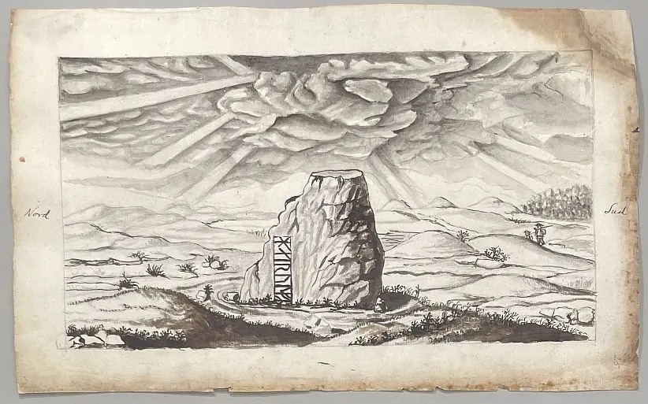
04.10.2022
Inzwischen habe ich meinen Studienbesuch in Kopenhagen und Umgebung (23. - 29.09.2022) beendet. Für mich war es wirklich ein tolles Erlebnis der besonderen Art. Die königliche Bibliothek war für fast drei Tage von 9 bis 18 Uhr mein Zuhause. Zahlreiche Werke / Handschriften / Bücher hatte ich dort rechtzeitig über meinen Online Account bestellt und durfte sie nun durchforsten. In den Sammlungen der beiden führenden dänischen Runenforschern des 19. Jahrhunderts - P. G. Thorsen (*07.08.1811 - 06.05.1883, Bibliothekar, Runenforscher und Historiker) und vor allem Ludv. F. A. Wimmer (*07.02.1839 - 29.04.1920, Philologe und Runenforscher) - zu stöbern war ziemlich aufregend. Darin finden sich neben deren unzähligen Aufzeichnungen, Notizzetteln und ihrem Briefverkehr die zahlreichen, originalen Zeichnungen der Runensteine durch Magnus Petersen (*04.09.1827 - 01.02.1917, Archäologischer Zeichner und Restaurator), die als Vorlagen für die Drucke in deren Runenbüchern dienten. Damals war die Fotografie zwar erfunden (1826), aber in Dänemark so noch nicht in Gebrauch. Auf jeden Fall nochmals "Tusind tak" dem gesamten Team für die Zuarbeit meiner Bestellungen.
Dazwischen hatte ich noch einen Abstecher in die Universität von Kopenhagen - in die "Arnamagnæanske Samling" - gemacht. Ich bekam dort die Handschriften von Jon Skonvig (1664) - AM 366, AM 367 und AM 369 - zur Besichtigung in deren kleinem Lesezimmer ausgehändigt. Ich durfte alles begutachten und ohne Einschränkung fotografieren. Während die AM 367 und AM 369 bereits in digitalisierter Form im Internet abruf bar sind, ist dies bei der AM 366 noch nicht der Fall (Eine Erlaubnis zur Veröffentlichung über meine Webseite wird gerade geklärt). Auch dort herrscht Personamangel wie man mir erklärte, da nur ein Fotograf angestellt ist. Diese häufig überhaupt ersten Zeichnungen der Runensteine dienten Ole Worm (*13.05.1588 - 31.08.1654, Arzt, Universalgelehrter und der Begründer der Runologie) als Vorlage für sein bahnbrechendes Werk "Danicorum Monumentorum Libri Sex, Hafniae, 1643".
Ein weiteres Highlight war der Besuch des dem Nationalmuseum angeschlossenen "Antikvarisk-Topografisk Arkiv". Ich durfte mehrere Kleinode aus deren Sammlung in Händen halten. Vorneweg die Bände von Rasmus Henrik Kruse (*07.08.1796 - 30.05.1877, Landschaftsmaler) "Nørrejyllands Mærkværdigheder i det 19. Aarhundrede".
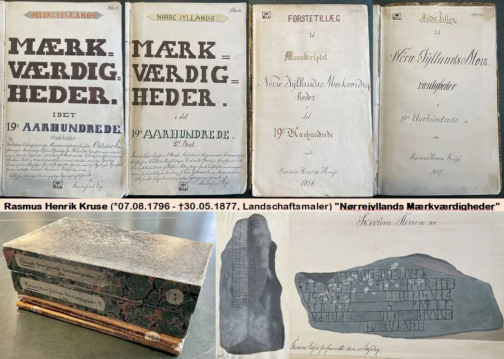
Neben wunderschönen Landschaftsbildern hat er auch zahlreiche Runensteine gemalt. In dem Archiv durfte ich außerdem die originalen Tage-/Notizbücher von Jens Jacob Asmussen Worsaae (*14.03.1821 - 15.08.1885, dänischer Archäologe und Vorgeschichtler. Er zählt zu den Wegbereitern der prähistorischen Archäologie) und von Jacob Kornerup (*19.11.1825 - 09.03.1913, dänischer Archäologe und Zeichner aus Roskilde) durchblättern.


Außerdem lagern dort die handschriftlichen Aufzeichnungen von Martin Friedrich Arendt (* 22. Februar 1773 in Altona; April 1823 in der Nähe von Venedig/Italien, deutscher Botaniker und Altertumsforscher) die ich ebenfalls durchsehen konnte. Hier z.B. seine Zeichnungen der Runensteine von Jütland - 9 - Læborg und von - 10 - Bække - beide am 12. August 1811 angefertigt.
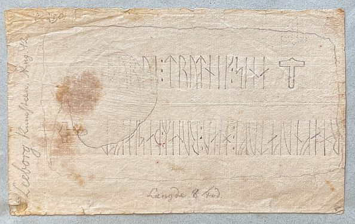
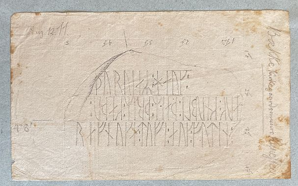
Mein besonderer Dank dort gilt Else Rasmussen und ihrem Team. Mange tak!
Die unzähligen erlangten Informationen - allein ca. 1600 Smartphone-Fotos - werde ich versuchen nach und nach aufzuarbeiten um darüber etliches in meine Homepage einzupflegen.
Auf der Anfahrt hatte ich einen kurzen Stopp bei der Wikingerburg "Vallø Borgring" (Seeland - 103) auf einem Feld außerhalb des Dorfes Lellinge, in der Nähe von Køge, auf der Insel Seeland, eingelegt. Das Gelände ist eingezäunt, alle Infotafeln wurden abgebaut und nur noch die aus Cortenstahl bestehenden Halterungen auf dem Fußweg und vor der Burg sind vorhanden. Der Verlauf der Wallanlage um das Burggelände ist mit Stahlpfosten angedeutet.
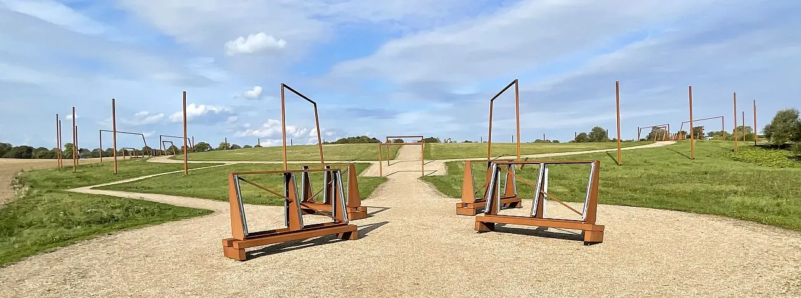
Am 24.09.2022 war ich im Nationalmuseum Kopenhagen erstmals in der neuen Wikinger Ausstellung "Togtet" die dort bereits ab dem 26.06.2021 für die Dauer von drei Jahren zu sehen ist. Durch die gesamte Ausstellungshalle erstreckt sich das größte bislang gefundene Wikingerschiff, die "Roskilde 6" - 37 Meter lang, gehoben 1997, gebaut vermutlich um 1025. Etwa 20 Prozent des Rumpfes aus Eichenholz sind noch erhalten. Nach ihrer Entdeckung war ein Stahlgestell erarbeitet worden, das es erlaubt, es zügig auf- und abzubauen, um es bei verschiedenen Anlässen - so z.B. bei der letzten großen internationalen Wikingerausstellung in Kopenhagen (22.06. - 17.11.2013) London (06.03. - 22.06.2014) und Berlin (10.09.2014 - 04.01.2015) präsentieren zu können.
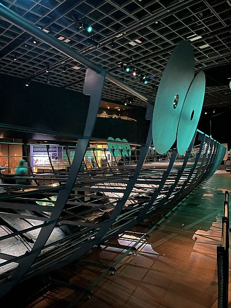
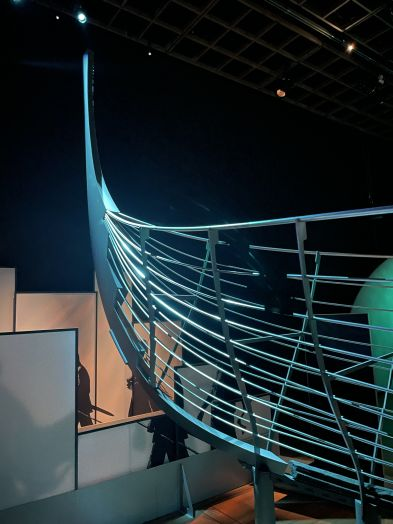
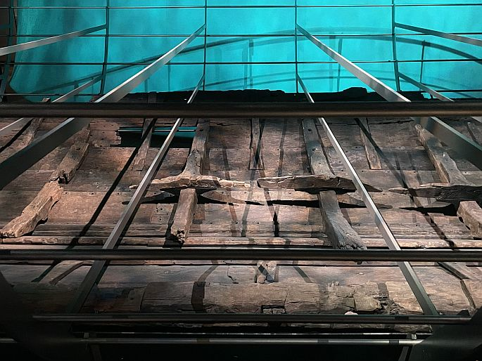
Daneben waren herausragende Funde ausgestellt, die man mit medialer Unterstützung in dänisch und englisch per Kopfhörer zum Sprechen bringen konnte. Hier eine kleine Auswahl:
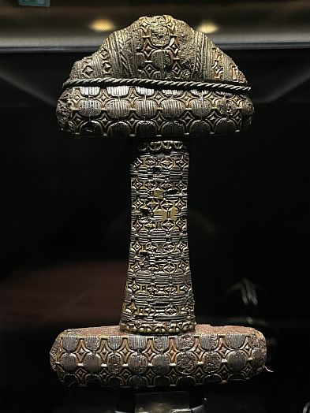
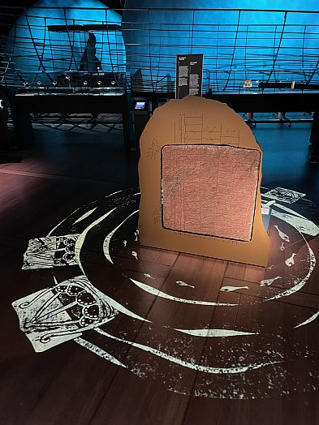
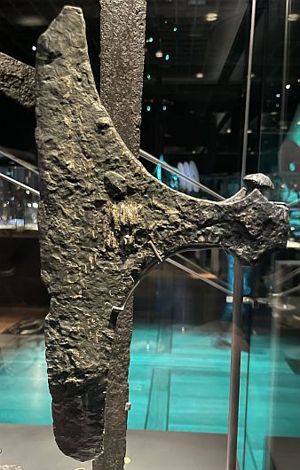

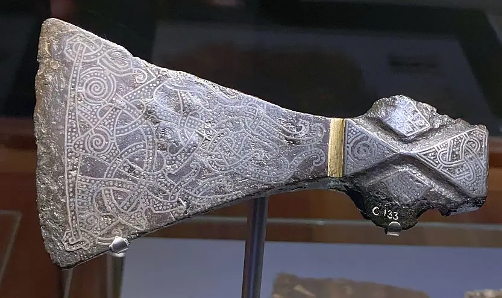
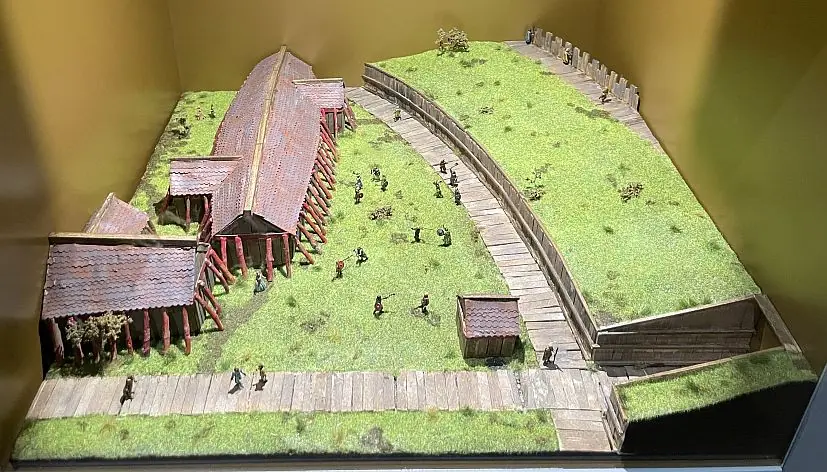
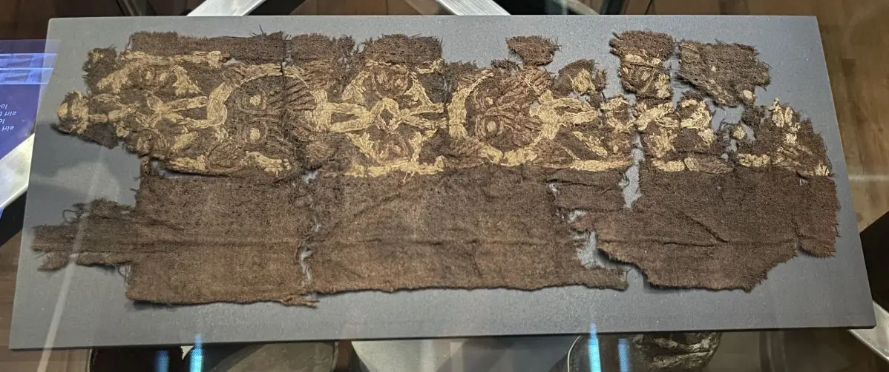
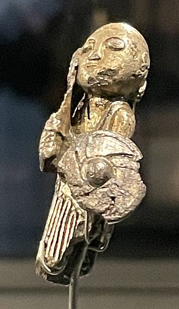
Am 25.09.2022 habe ich im Rahmen meines Kopenhagen Studientripps eine Radtour nach Roskilde gemacht und auf dem Hinweg zunächst in DK-2650 Hvidovre, 355 Hvidovrevej, Boligselskabet Friheden - Geodaten: 55.625394, 12.482437 - Station gemacht. Im Jahre 1933 hat man eine in Beton gegossene Kopie des großen Runensteins aus Jelling / Harald Blauzahns Runenstein anfertigen lassen. Diese Kopie wurde 1943-45 durch den Künstler Rudolf Broby-Johansen (*25.11.1925 - 09.08.1987) farbig gestaltet. Sie stand dann lange Jahre im Innenhofgarten des Nationalmuseum in Kopenhagen. Als dieses in den 1990er Jahren umgestaltet wurde, ließ man eine neue 1:1 Kopie anfertigen. Diese war genauer als die bisherige Kopie, für die man danach keinen Platz mehr hatte. Seit 1990 steht die alte Kopie nun in einem Vorort von Kopenhagen am Straßenrand. Sie wurde im Sommer 2020 gründlich von Schmutz und Moos gereinigt und danach durch die Steinkonservatorin Susanne Trudsø vom Nationalmuseum neu angemalt.
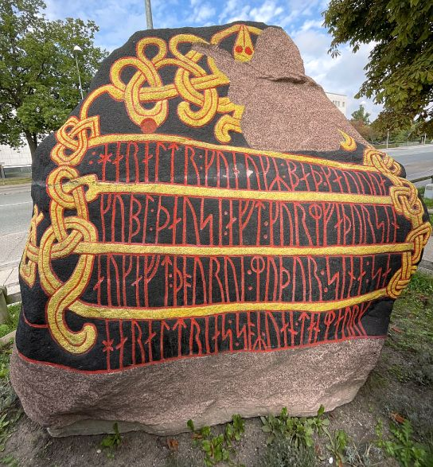
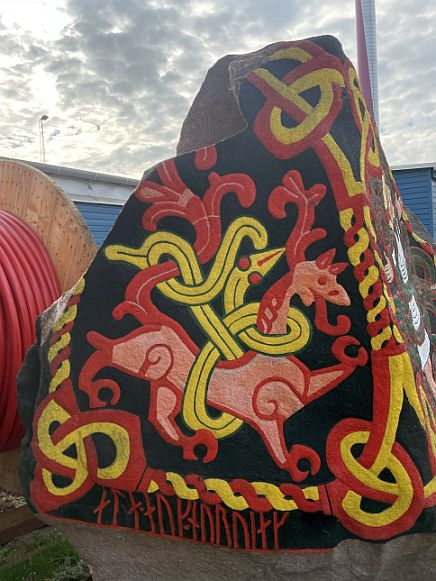
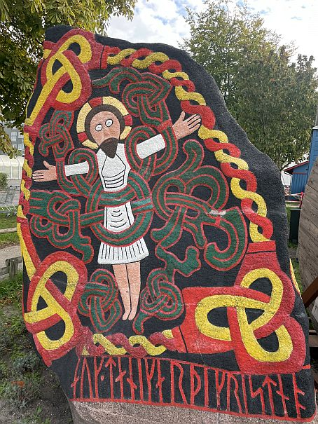
Leider waren direkt hinter dem Runenstein wegen irgendwelchen Bauarbeiten zwei große Kabeltrommeln abgelegt worden, die beim fotografieren störten. Aber so schlecht sind die Fotos dann doch nicht geworden. :-)
Als nächstes Ziel hatte ich der Google Navigation DK-2620 Albertslund, Vikingebro - Geodaten: 55.688988, 12.319609 - vorgegeben. Von 2017-2019 bauten die beiden Kultureinrichtungen - Kroppedal Museum und das benachbbarte Wikingerdorf in Albertslund - gemeinsam mit Freiwilligen und Schülern den längsten rekonstruierten Straßen- und Brückenparcours der Welt aus der Wikingerzeit. Die Attraktion besteht aus dem physischen Straßen- und Brückenverlauf in der Landschaft von Store Vejleådalen zwischen Høje-Taastrup und Albertslund, der mobilen App Useeum/Vikingebro und der Ausstellung Hver dag er en kamp im Kroppedal Museum. Die 2019 fertiggestellte Straßen-/Brückenkomplex (Zweig- und Reisstraße, Kopfsteinpflasterstraße, Planken- und Schwellenstraße und Schlaglochstraße) hat eine Gesamtlänge von ca. 765 m, während die Holzbrücke allein ca. 140 m Länge aufweist. Am Beginn der Straße ist ein einzelnes Brückenfach aufgebaut worden, worüber sich einem die Dimensionen leichter erschließen.
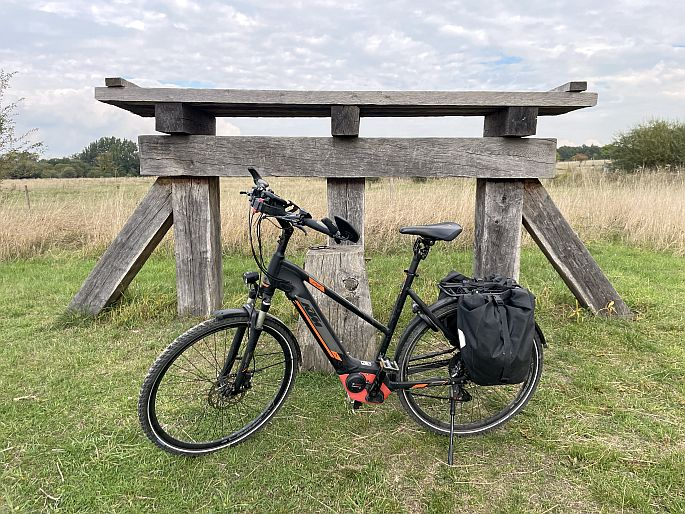
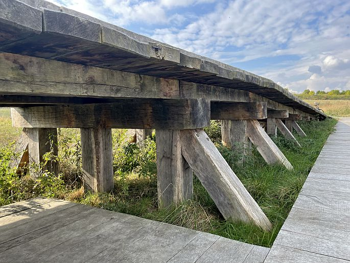
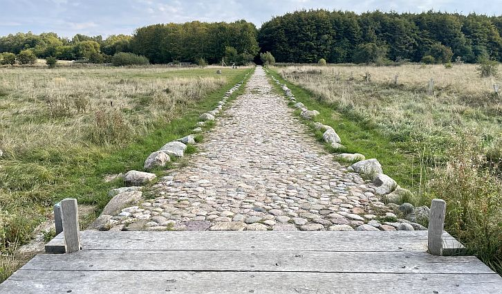
In dem benachbarten Wikingerdorf Albertslund - Geodaten: 55.690092, 12.321802 - das als historische Werkstatt seit 1992 durch die Kommune Albertslund betrieben wird, wurden über die Jahre hinweg verschiedene Gebäude erstellt, von denen ich diese Fotos hier habe.
Roskilde - Areal rund um das Wikingerschiffsmuseum - 25.09.2022
Die Rückkehr der "Havhingsten fra Glendalough" von einer Nordseetour durfte ich dann live erleben - Das war richtig beeindruckend - schaut selbst - VIDEO -->
Die Nørregade ist eine der ältesten Hauptstraßen Kopenhagens und war im Mittelalter die breiteste Straße der Stadt, wo sie als Hauptzufahrtsstraße der Stadt aus dem Norden diente. Am Mittwoch, 28.09.2022, habe ich in die Nørregade 11, den Bischofssitz, aufgesucht.
Im Innenhof nach dem Eingangstor ist rechts ein Runenstein eingemauert, auf den ich erstmals 2016 über das Buch von Lisbeth M. Imer (*1973, Runologin am Nationalmuseum Kopenhagen) "Danmarks Runesten - en fortælling" - Abbildung Seite 193 - aufmerksam wurde.
Es handelt sich um den Runenstein - DR 315 / DK SkL 4 / L 1918 - Lund 2 - der um das Jahr 1800 von N. H. Sjöborg in einem Steinzaun in "Stora Tvärgatan" in der Nähe von "Södergatan" in Lund entdeckt wurde - siehe "N. H. Sjöborg - Samlingar för Nordens fornälskare, Band 3, S. 159". Dort verblieb er auch bis er 1829 von Bischof Faxe aus Lund an den Kopenhagener Bischof Friedrich Münter als Geschenk übergeben wurde.
Neben seiner Tätigkeit als Priester war Bischof Friedrich Münter (*14. Oktober 1761 in Gotha - 09. April 1830 in Kopenhagen) ein anerkannter Philologe und Archäologe.
Bildquelle: Det Kgl. Biblioteks billedsamling - Lizenz: Public Domain
Als junger Mann bereiste er mehrere europäische Städte wie Wien, Rom und Florenz. Er besuchte Bibliotheken, Münz- und Antikensammlungen. Durch seine Auslandsaufenthalte hat er sich ein großes internationales Netzwerk aufgebaut. In dem Buch "Bispegaarden i København" (Erling Rørdam, 1927) heißt es: "Er [Bischof Friedrich Münter] ließ in die Mauern der Vorhalle und des Tores von ihm erworbene Denkmäler einbauen: ägyptische Stelen, einen Runenstein, Fragmente römischer Inschriften, Buddhafiguren usw."
Unter diesem Link findet sich in "Nationamuseets Arbejdsmark, 2012" diese Abhandlung "Biskop Frederik Münter og hans museum" von Nora Margherita Petersen.
Der bewahrte Teil der Inschrift lautet: "Toki ließ die Kirche bauen und ...". Es handelt sich um einen feinkörnigen, blaugrauen Granitstein von 125,5 cm Höhe, bei einer größten Breite von 47 cm (hier liegend eingemauert). Die Runen haben eine Höhe von 5,7 cm bis 6,2 cm. Es ist nicht bekannt von welcher Kirche auf dem Runenstein gesprochen wird, vielleicht eine wikingerzeitliche Kirche aus Holz. Laut N. H. Sjöborg könnte die St. Botulf Kirche in Lund gemeint sein. Die St.-Botulf-Kirche befand sich im Mittelalter an der Stelle des 1931 erbauten Botulfshuset.
Ludv. F. A. Wimmer (*07.02.1839 - 29.04.1920, Philologe und Runenforscher) - er war der erste moderne Runenforscher - untersuchte den Stein erstmals im Juni 1880. In seinem großen Runenwerk "De danske runemindesmærker undersøgte og tolkede af Ludv. F. A. Wimmer, Fjærde Binds Første Afdeling, Runeligstene og Mindesmærker knyttede til kirker, 1903-1904" macht er ab der S. 157 Ausführungen zu dem Stein und zeigt auf S. 158 diese Zeichnung von Magnus Petersen (*04.09.1827 - 01.02.1917, Archäologischer Zeichner und Restaurator).
Ludv. F. A. Wimmer hat seine jahrelangen Aufzeichnungen der "Kgl.
Bibliotek" in Kopenhagen überlassen. Ein
Verzeichnis darüber wurde 1915 in Buchform herausgegeben
"Collectio
runologica Wimmeriana : Fortegnelse
over Ludv.
F.
A.
Wimmers runologiske o.
a.
Samlinger
i Det kgl. Bibliotek"
-
In seinen Unterlagen in der Bibliothek befinden sich unter "III - Originaltegninger af de danske Runemindesmærker, udførte paa Undersøgelsesrejserne af Magn. Petersen og kontrollerede paa Stedet af Ludv. Wimmer, samt Prøvetryk af de paa Grundlag af de nævnte Tegninger, Aftryk o. s. v. til De danske Runemindesmærker" udførte Afbildninger med Wimmers Rettelser" mit der Nummer 228 diese Zeichnung von Magnus Petersen zu dem Runenstein - DR 315 / DK SkL 4 / L 1918 - Lund 2, die er damals lediglich mit der Jahreszahl 1881 datiert hat.

Über diesen Link finden sich zu dem Runenstein Informationen des Forschungsprojektes "Runes" der Akademie der Wissenschaften zu Göttingen.
Über die schwedische Runendatenbank findet man deren Informationen zu dem Runenstein hier.
Auf der Rückfahrt von Kopenhagen nach Rostock am 29.09.2022 habe ich auf der Insel Falster noch kurz bei der Wikingerburg "Tryyge Borg" - DK-4863 Eskilstrup, Virketvej 44 / Geodaten: 54.836423, 11.962737 - Halt gemacht. Diese liegt neben dem heutigen Golfklub und dem Virket See.
Am Freitag, 29.05.2020, wurde über diese Internetseite in deutscher Sprache berichtet, dass am darauffolgenden Dienstag die Ausgrabungen auf der größten dänischen Wikingerburg starten. Der Autor berichtet dann in zwei weiterem Beiträgen über die Grabungen. Zunächst am 06.06.2020 über den Besucheransturm und nochmals am 06.07.2021 über neuerliche Grabungen im Juli 2021.
Über diesen Link kann man eine tonlose Animation (1:14 Minuten) von TV2 Øst über die Ausmaße und den Wallverlauf der Burg anschauen. Ein Drohnenfoto vom 04.08.2018 von Henrik Schilling vom Lolland Falster Museums mit einem Überblick über die gesamte Anlage kann man hier abrufen - Lizenz: CC BY-SA 4.0
Die Burganlage sei einer ersten Schätzung zufolge in der Zeit von 850 bis 1250 genutzt worden. Der bekannte Historiker Saxo Grammaticus hat eine gewaltige Schlacht beschrieben, in der die Einwohner von Falster im Jahr 1158 eine Armee aus dem Land der Wenden im heutigen Deutschland und Polen an einer Festung zurückgeschlagen haben. Seit fast 100 Jahren wird angenommen, dass es sich dabei um eine Anlage im Hannenov Skov handelte, wo auch ein Gedenkstein für die Schlacht errichtet wurde. Jetzt haben die Forscher diese Theorie jedoch aufgegeben und glauben stattdessen, dass es bei der neu gefundenen Burg beim Virket See war.
Auf dieser Landkarte von 1807 ist der Wall der Burganlage noch eingezeichnet. Diese und anderen Karten der Region können hier abgerufen werden.
Heutzutage sieht das Gelände so aus:
Hier ist ein Wallabschnitt und die davorliegende Rampe zu sehen.
Ein direkter Blick über die Rampe auf den Wallabschnitt.
Oberhalb des zuvor gezeigten Wallabschnittes liegt der Eingang in die Burg.
Blick über den größten Teil des Burggeländes - links mittig der Eingang - rechts seitlich der Verlauf der Oberkante des zuvor gezeigten Walles.
10.09.2022
Im Zuge der intensiven Vorbereitungen für meinen Studienbesuch in Kopenhagen vom 23. bis 29.09.2022 (Det Kgl. Bibliotek - Den sorte Diamant, Kunstbiblioteket - Studiesal Søborg, Nationalmuseet København - Antikvarisk-Topografisk Arkiv, Universität Kopenhagen - Den Arnamagnæanske Håndskriftsamling) habe ich nochmals Überarbeitungen mit neuen Informationen zu der Seite von Jütland - 6 - Hovslund vorgenommen, da ich darüber erstmals auf ein in deutscher Sprache gehaltenes Werk von Erik Pontoppidan (der Jüngere, *03.09.1698 - 20.12.1764, dänischer Theologe, Prediger, Historiker und Autor) aus dem Jahr 1754 aufmerksam wurde. Aber es gab daneben auch noch weitere Ergänzungen zu dieser Seite. Auch zum Runenstein 1 - 28 - Gunderup
30.08.2022
Die überarbeiteten Seiten von Jütland - 28 - Gunderup - 29 - Lyngby - und - 30 - Suldrup konnte ich heute online zur Verfügung stellen.
29.08.2022
Die überarbeitete Seite von Jütland - 25 - Hune - 26 - Lindholm Høje - und - 27 - Ferslev konnte ich heute online bringen.
28.08.2022
Die neuen Erkenntnisse / Fotos zu den Örtlichkeiten in Jütland - 18 - Hurup - 19 - Hørdum - 20 - Sjørring - 23 Aggersborg - und - 24 - Jetsmark habe ich heute aufbereitet und eingestellt.
27.08.2022
Die neuen Erkenntnisse / Fotos zu den Örtlichkeiten in Jütland - 17 - Ydby/Flarup - und - 21 - Vang habe ich heute aufbereitet und eingestellt.
19.08.2022
Die neuen Fotos zu den Örtlichkeiten in Jütland - 14 - Ådum - 15 - Hanning - und - 16 - Rammedige habe ich heute einbauen können.
10.08.2022
Die überarbeitete Seite von Jütland - 12 - Horne habe ich heute eingestellt. Ich war am Montag, 30.05.2022, an der Örtlichkeit.
02.08.2022
Die überarbeitete Seite von Jütland - 11 - Klebæk Høje konnte ich heute uploaden. Ich war am Montag, 30.05.2022, vor Ort.
30.07.2022
Die überarbeitete Seite von Jütland - 10 - Bække habe ich heute eingestellt. Ich war am Montag, 30.05.2022, an der Örtlichkeit.
29.07.2022
Heute habe ich zu Jütland - 77 - Hjarnø die Bilder von meinem letzten Besuch vom Freitag, 17.06.2022, eingestellt.
Erstmals habe ich diese Monumente auch über ein ausgefahrenes und in die Höhe gestrecktes Einhandstativ - darüber aus ca. 4 m Höhe - fotografiert. Dadurch erhält man natürlich einen ganz anderen Blick auf die Schiffssetzungen.